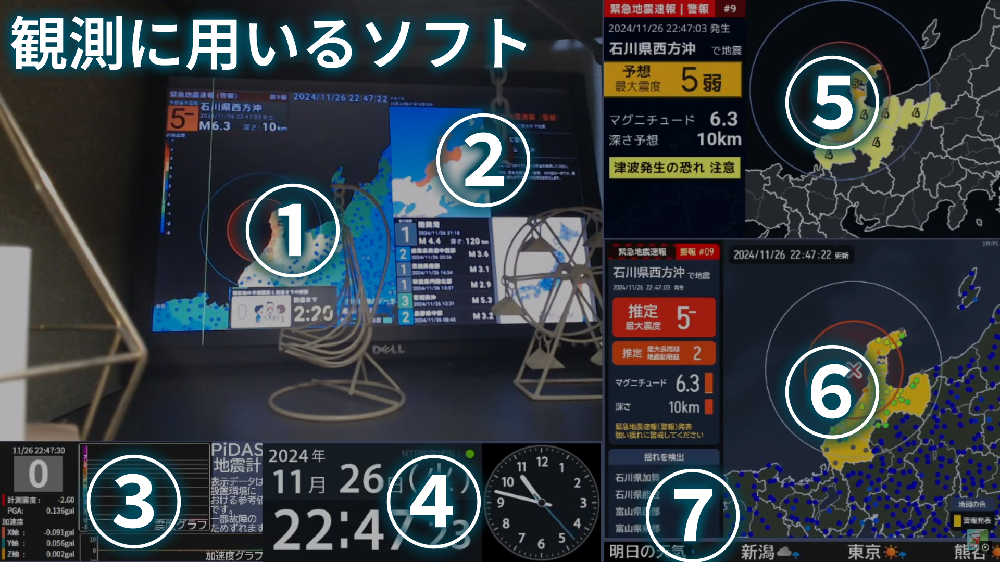

配信画面

震度4以上または福岡県内で震度1以上を観測した場合に、アーカイブを投稿します。
| Num | Software | Author |
|---|---|---|
| 1 | JQuake | フランソワ 様 |
| 2 | P2PQuake | たくや 様 |
| 3 | PiDASPlusGraph | ingen 様 |
| 4 | LiveQuake for MGNT | 自作ソフト |
| 5 | QuapInfo | 自作ソフト |
| 6 | リアルタイム地震ビュアー | ことほの 様 |
| 7 | WeatherQuakeTelop for MGNT | 自作ソフト |
| Back | TsunamiInfoText | 自作ソフト |
| Back | EarthquakeEarlyWarning Display | 自作ソフト |
| Back | 地牛Wake UP! | weiluen 様 |
| Back | 棒読みちゃん | みちあき 様 |